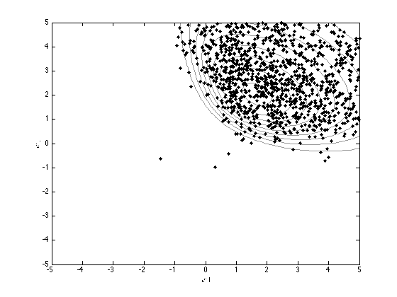

Contents
logmh.m
From A First Course in Machine Learning, Chapter 4. Simon Rogers, 01/11/11 [simon.rogers@glasgow.ac.uk] Metropolis-Hastings for Logistic Regression
clear all;close all;
Load the classification data
load ../data/logregdata;
Initialise w
w = randn(2,1);
Generate N Samples
ss = 10; N = 2000; jumpvar = 1; % Jumping variance for each parameter w_all = zeros(N,2); Naccept = 0; for n = 1:N % Propose a new sample ws = w + randn(2,1).*sqrt(jumpvar); % Compute ratio of new to old priors (constants cancel) priorrat = -(1/(2*ss))*ws'*ws; priorrat = priorrat + (1/(2*ss))*w'*w; % Subtract old prior % Compute ratio of new to old likelihoods prob = 1./(1+exp(-X*w)); newprob = 1./(1+exp(-X*ws)); like = sum(t.*log(prob) + (1-t).*log(1-prob)); newlike = sum(t.*log(newprob) + (1-t).*log(1-newprob)); rat = newlike - like + priorrat; if rand<=exp(rat) % Accept Naccept = Naccept + 1; w = ws; end w_all(n,:) = w; end fprintf('\nAcceptance ratio: %g',Naccept/N);
Acceptance ratio: 0.6845
Plot the true contours and the samples
[w1,w2] = meshgrid(-5:0.1:5,-5:0.1:5); logprior = -0.5*log(2*pi) - 0.5*log(ss) - (1/(2*ss))*w1.^2; logprior = logprior + (-0.5*log(2*pi) - 0.5*log(ss) - (1/(2*ss))*w2.^2); prob_t = 1./(1+exp(-[w1(:) w2(:)]*X')); loglike = sum(log(prob_t).*repmat(t',prod(size(w1)),1),2); loglike = loglike + sum(log(1-prob_t).*repmat(1-t',prod(size(w1)),1),2); logpost = logprior + reshape(loglike,size(w1)); contour(w1,w2,exp(logpost),'k','color',[0.6 0.6 0.6]) xlabel('$w1$','interpreter','latex'); ylabel('$w2$','interpreter','latex'); hold on plot(w_all(:,1),w_all(:,2),'k.','markersize',10)
Plot the prediction contours
Create an x grid
[Xv,Yv] = meshgrid(-5:0.1:5,-5:0.1:5); % Compute the probabilities over the grid by averaging over the samples Probs = zeros(size(Xv)); for i = 1:N Probs = Probs + 1./(1 + exp(-(w_all(i,1)*Xv + w_all(i,2)*Yv))); end Probs = Probs./N; figure(1);hold off plot(X(1:20,1),X(1:20,2),'ko','markersize',10,'markerfacecolor','k') hold on plot(X(21:40,1),X(21:40,2),'ks','markersize',10,'linewidth',2) [cs,h] = contour(Xv,Yv,Probs); clabel(cs,h);